Steam VR
1 安装
2 按键绑定
将自己的配置设置为默认配置。
-
Unity中 Window->SteamVR Input,打开设置面板
-
点击 open binding ui
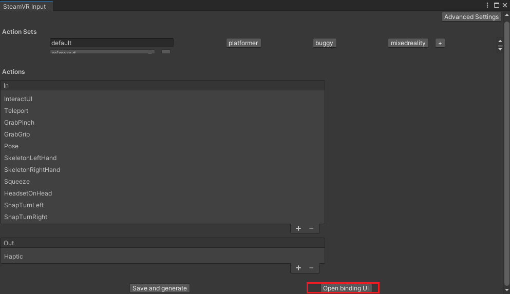
- 如果显示 “这些是此游戏开发这发布的官方案件设置”，那么说明使用的不是你的配置
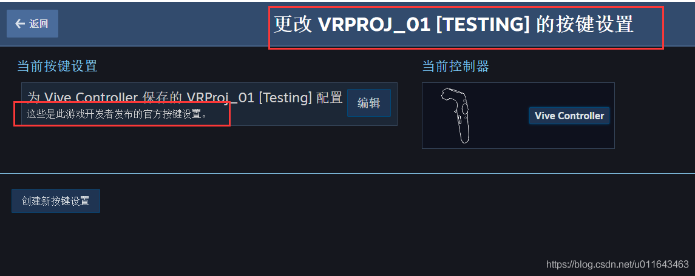
- 点击 编辑，弹出面板后，点击 替换为默认配置
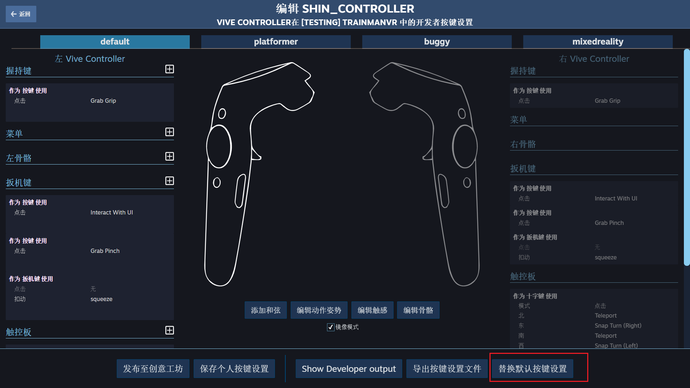
- 填写你的信息，点击保存
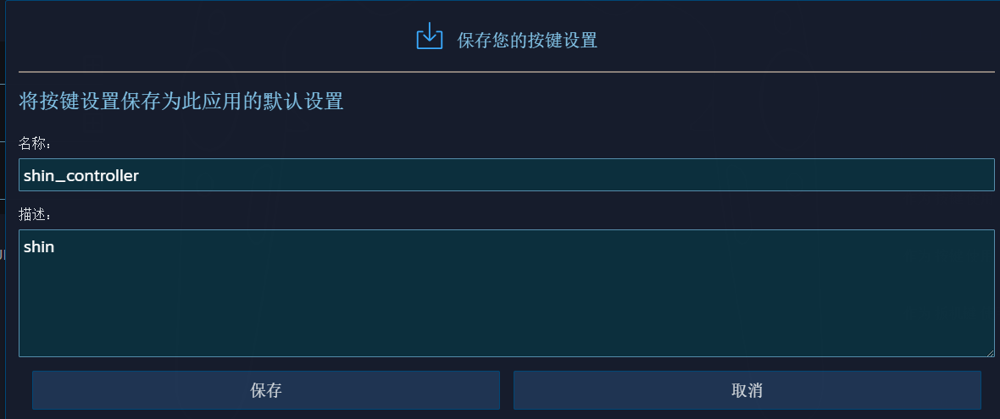
- 最后显示为你的配置，此时发布可以了
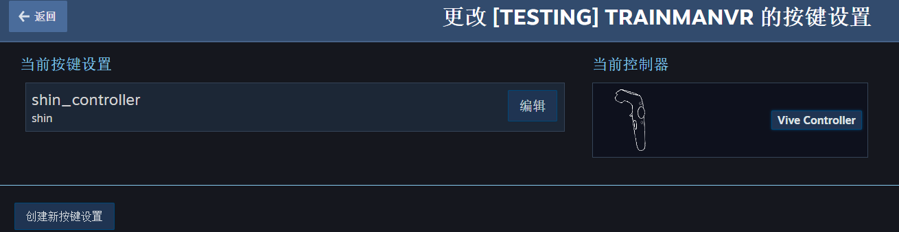
3 组件说明
无论是与模型还是UI的交互，无论是直接使用手柄还是射线的交互方式，交互对象(如果对象本身没有，那么子级上要有)需要有Collider，一般为BoxCollider，交互分手势交互和射线（手柄发送射线）交互两种情况，一般情况下，我们都用射线来交互，如和UI交互，大部分模型（如，仿真检查设备操作），手势操作的包含如：拉动滑块，转动轮盘等情况。
手势交互
3.1 Interactable
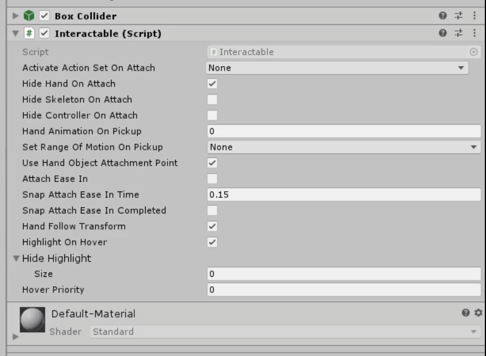
-
标识对象是可交互的
-
当手柄触碰到对象时，显示轮廓高亮
-
不能实现抓取和投掷等功能
-
通过继承该组件重写OnPointerClick函数来写自己的业务逻辑，或者直接注册 PointerClick 事件来写自己的业务逻辑
3.2 Throwable
投掷功能组件：添加这个组件时，会自动添加依赖组件Interactable(可交互的) 和 Rigibody（释放时，物理重力）
3.3 SteamvR_LaserPointer
官方提供的，在CameraRig预制体上的一个组件，用于实现激光交互，我们可以迁移到Player上

用于射线交互
-
Pose 保持默认，会自动关联
-
InteractWithUI: 默认
-
Active: 设置无效（源代码未使用）
-
Color: 射线默认颜色，这里设置为白色，透明度注意设置为255
-
Thickness: 射线宽度，默认
-
Click Color: 点击颜色
-
Holder: Pointer的父级， 设置无效，源代码中会自动创建
-
Pointer: 设置无效，源代码中会自动创建一个Cube
-
AddRigidBody: 射线上添加刚体属性，默认
-
Reference: 设置无效，源代码中未使用
3.4 SteamVR_LoadLevel
属性面板
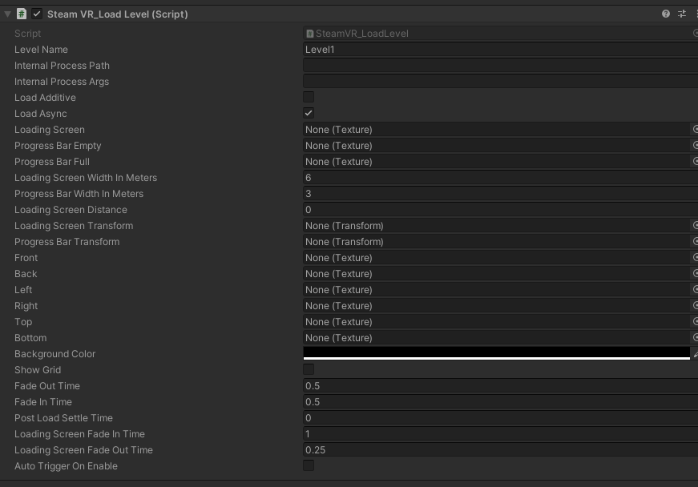
所有用到的贴图，检查是否被压缩，全部改为不压缩
-
LevelName:场景名称
-
InternalProcessPath:加载时要启动的进程（不用写）
-
InternalProcessArgs:进程参数
-
Load Addtive:场景是否是添加模式，不勾选就是从当前场景切换到目标场景
-
LoadAsync: 是否为异步加载，一般勾选
-
LoadingScreen: 加载背景
-
ProgressBarEmpty:加载进度条的背景
-
ProgressBarFull:加载进度条的进度
-
LoadingScreenWidthInMeters:加载背景的宽度（单位m）
-
ProgressBarWidthInmeters:加载进度条的宽度(单位m)
-
LoadingScreenDistance: 加载背景的距离，0代表无限远的地方，这里可以不设置，而采用下面两个来设置
-
LoadingScreenTransform：在场景中创建一个空对象，位置代表背景的位置
-
ProgressBarTransform:在常见中创建一个空对象，摆放和背景一个相对的位置，方便调整进度条在背景的某个位置，避免遮挡背景上的文字
-
Front:这6张图，代表天空盒的6个面
-
Back:
-
Right:
-
Top:
-
Bottom:
-
BackgroundColor:背景颜色
-
ShowGrid:是否显示网格
-
Fade Out Time:淡出时间
-
Fade In Time:淡进时间
-
Post Load Settle Time: 场景载入后，还需要等待的时间，为了能够很好的观看加载界面
-
Loading Screen Fade In Time: 加载背景淡入的时间 保持默认
-
Loading Screen Fade Out Time: 加载背景淡出的时间 保持默认
-
Auto Trigger On Enable: 脚本激活就触发加载
注意事项
（1）组件一直处于Loadind状态，导致无法加载
启动launch场景，自动加载 Hall 场景，这个时候如果在加载其他场景时，无效，代码查看是因为 static laoding 一直为 true
解决方案
加载Hall直接使用SceneManager.LoadScene("Hall",Mode.Addtive)来加载
另外使用组件时，使用的是异步加载，不知道换同步是否存在问题
3.5 Teleport
3.5.1 配置规则
传送涉及到两个预制体和一个组件
-
Teleporting(预制体) ：必要的预制体，拖到场景，没有不行，提供传送的机制逻辑等
-
TeleportPoint(预制体) ：传送点，定位传送
-
TeleportArea(组件) ：传送区域，区域传送
- 注意：TeleportPoint 预制体的碰撞体默认是属于UI Layer，所以 Teleporting 检测的层级一定要包含 UI 层，或者你自定义
3.5.2 Teleporting
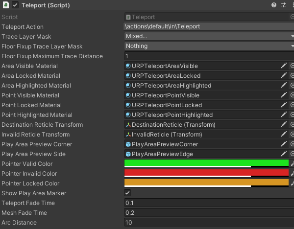
主要关注图上属性配置，其他的是特效，声音以及调试的配置
-
TeleportAction : 动作配置
-
TraceLayerMask : 检测的图层，如：手柄发送射线传送时，射线被某个物体遮挡，此时，可以将这个物体设置一个独立的图层，然后，这里不勾选这个图层，射线就会穿过这个物体
-
FloorFixupTraceLayerMask : 将哪些图层识别为地面，和下面的Distace属性共同使用
-
FloorFixupMaximunTraceDistance ：一个容差，用于角色在传送后，角色始终在地面上而不是在传送区域所在的平面上，举例：传送区域高于地面0.5,若 FloorFixupTraceLayerMask 设置的是nothing,那么传送后，角色就会高于地面0.5 ；若 FloorFixupTraceLayerMask设置了地面图层，那么会根据这里的distace，假设为1，会在1这个范围内查找地面，如果找到，就设置角色到地面上，这里1>0.5所以，会找到地面图层，会将角色传送到地面上
URP材质替换
在URP渲染模式下：DestinationReticle 对象的材质，默认是 TeleportPointHighlighted,在编辑模式下还正常，但是发布后会出现无线显示传送位置标记的问题，需要替换为URP的材质，如下图：
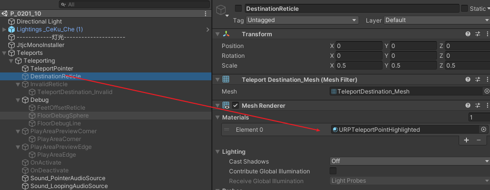
3.5.3 TeleportPoint
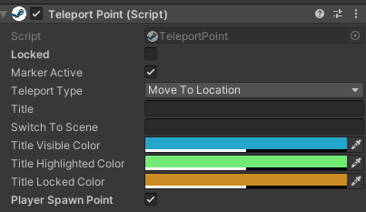
-
Lockked ：勾选，将无法传送到此区域，可通过代码来控制此变量，动态解锁传送区域
-
MarkerActive ：勾选，运行时，传送区域不会显示，当按下传送健的时候才显示出来，否则，一开时就显示
-
TeleportType ：传送到本地或者是切换场景
-
Title ：传送的名称，在游戏当中显示
-
SwitchToScene ：场景名称，需要“TeleportType” 为 “SwitchToNewScene”
-
PlayerSpawnPoint ：角色初始点，勾选，角色最开始会出现在这个位置
4 Player
角色组件
-
这是一个单例，场景中仅能存在一个，因此该对象在场景切换时不会不销毁，会一直存在
-
使用技巧：现在一个空场景放置一个Player,启动空场景后立刻加载场景，这样切换场景时，Player一直存在
-
或者若你的初始场景是一直存在，加载场景是以“Addtive”的方式，那么可将Player放置在初始场景
5 组件扩展
5.1 激光交互响应组件（LaserHand）
该组件依赖 SteamVR_LaserPointer,并监听其的 PointerIn、PointerOut、PointerClick 三个事件，以实现对对象的指针移入、移出和点击三种交互事件的处理
代码
using UnityEngine;
using UnityEngine.EventSystems;
using Valve.VR.Extras;
namespace LFramework
{
/// <summary>
/// 激光射线交互，挂手柄上
/// </summary>
[RequireComponent(typeof(SteamVR_LaserPointer))]
public class LaserHand : MonoBehaviour
{
// LaserPointer组件
private SteamVR_LaserPointer _laser;
// 是否开启激光指针交互
public bool isEnabled = true;
private void Awake()
{
// 获取到LaserPointer组件
_laser = GetComponent<SteamVR_LaserPointer>();
// 如果不为空
if (_laser != null)
{
// 如果不开启激光指针交互
if (!isEnabled)
{
// 激光指针不显示
_laser.enabled = false;
return;
}
else // 如果开启激光指针交互
{
_laser.PointerIn += LaserOnPointerIn;
_laser.PointerOut += LaserOnPointerOut;
_laser.PointerClick += LaserOnPointerClick;
}
}
}
private void LaserOnPointerIn(object sender, PointerEventArgs e)
{
IPointerEnterHandler _pointerEnterHandler = e.target.gameObject.GetComponent<IPointerEnterHandler>();
if (_pointerEnterHandler != null)
{
_laser.color.a = 1;// showColor;
_pointerEnterHandler.OnPointerEnter(new PointerEventData(EventSystem.current));
}
}
private void LaserOnPointerOut(object sender, PointerEventArgs e)
{
IPointerExitHandler _pointerExitHandler = e.target.gameObject.GetComponent<IPointerExitHandler>();
if (_pointerExitHandler != null)
{
_laser.color.a = 0;
_pointerExitHandler.OnPointerExit(new PointerEventData(EventSystem.current));
}
}
private void LaserOnPointerClick(object sender, PointerEventArgs e)
{
IPointerClickHandler _pointerClickHandler = e.target.gameObject.GetComponent<IPointerClickHandler>();
if (_pointerClickHandler != null)
{
Debug.Log("点击了..." + e.target.gameObject.name);
_pointerClickHandler.OnPointerClick(new PointerEventData(EventSystem.current));
}
}
private void OnDestroy()
{
if (_laser != null && isEnabled)
{
_laser.PointerIn -= LaserOnPointerIn;
_laser.PointerOut -= LaserOnPointerOut;
_laser.PointerClick -= LaserOnPointerClick;
}
}
}
}
对UI的交互
-
和普通开发模式一样，是对Button组件的交互
-
Button按钮上添加BoxCollider组件，用于射线检测
-
注意交互对象所在的Layer(层级),是否在射线检测的层级设置里面
对模型的交互
-
模型对象上添加BoxCollider组件，用于射线检测
-
注意交互对象所在的Layer(层级),是否在射线检测的层级设置里面
-
在模型上挂载一个组件，该组件根据需求实现：
IPointerEnterHandler IPointerExitHandler IPointerClickHandler三个接口
代码忽略。
6 UI
6.1 设置
-
将Canvas 设置为 World Space 模式
-
Scale 均设置为 0.001,长宽都设置为1（这个没什么影响）
-
其他和普通的UI设置一样
6.2 UI被模型遮挡
-
使用网上的 uioverlay shader制作材质，赋给 image text rawimage 等
-
对于 TextmeshProUGUI, 它有自己的 overlay shader，我们主要将我们制作的字体材质复制一份，作为ovlerlay材质，将shader换为 Distance filed Overlay shader
-
问题：玩家的手部模型，和射线也会被 设置了Overlay的UI覆盖，导致 无法操作 这种UI，目前还没解决，网上的人很狗屎，没人提这个问题
7 问题汇总
世界坐标中的Canvas在相机距离改变后被遮挡
图中的箭头是个UI，当相机离它近时，它正常显示在黄色标签的前面，如下图
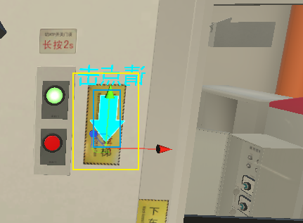
当相机拉远点时，箭头被标签挡住了
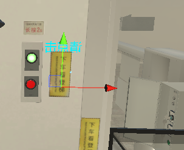
解决办法：将Cavans的Order in Layer 设置为1，要大于0
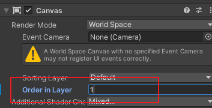
HTC VIVE 定位器更新固件后闪烁红灯
官方回复（失败）
首先联系官方，根据回复指导操作后，未解决问题，以下是官方的回复：
以下是1.0 定位器重置固件的详细操作步骤。
1. 从电源插座上拔下电源适配器。
2. 从基站背面拔下电源适配器。
3. 使用官方自带 USB 线缆（手柄充电线）将基站与计算机连接。
4. 按住“频道键”不放。
5. 将电源适配器连接到基站背面，然后将另一端插入电源插座。
6. 在计算机上，您将看到一个新设备显示为CRP DISABLD.
7. 打开它并删除文件 firmware.bin.
8. 在计算机上，转到SteamVR的安装文件夹。
9. 找到到固件版本为436的文件夹。文件夹路径如下： VIVE\Steam\steamapps\common\SteamVR\tools\lighthouse\firmware\lighthou setx\archive\htc2.0
10. 复制 lighthousetxhtc_2.0-436-2016-09-20.bin 到 CRP DISABLD 中。
11. 等候约 1分钟，然后拔下USB线缆。
网友方法(成功)
注意：若修复成功，定位器会显示一个感叹号，提示更新，千万不要更新，就是因为更新出现的问题，我们的操作就是回退固件。 {.is-warning}
在SteamVR安装目录下找到以下两个文件，安装目录：D:\Program Files (x86)\Steam\steamapps\common\SteamVR\tools\lighthouse\firmware\lighthouse_tx\archive\htc_2.0
lighthouse_tx_htc_2_0-calibration-rescue-244.bin lighthouse_tx_htc_2_0-244-2016-03-12.bin
附件根据自己的具体路径查找
-
将好的定位器先断电
-
在基站未通电情况下，将其通过micro-B USB（手柄充电线）传输线连接到PC。
-
按住基站背后的模式键并插入电源线.
-
一旦PC端确认为USB大容量存储设备(USB mass storage device)，才可以释放模式键。
-
被连接的基站储存设备名为“CRP_DISABLED”，打开后包含一个文件“firmware.bin”，删除它。
-
将“lighthouse_tx_htc_2_0-calibration-rescue-244.bin”文件复制到基站的储存空间上。
-
复制完成后，拔掉电源线。
-
等几秒，然后再次插上电源。在此过程中不要按模式键。几秒后基站应该会快速的闪烁绿灯或者红灯。绿灯表示修复成功。
-
如果它闪烁红灯，这表示不能自动修复，请您送修。
-
再此拔下电源。
-
重复步骤1到7，但第5步复制文件改为“lighthouse_tx_htc_2_0-244-2016-03-12.bin"。
-
完整后基站就恢复正常了，讲其频道设置为“A”并单独跟踪（另一个基站不通电）来确认运行情况。一旦确认工作正常，再打开另一个基站。
其他：
-
若单独使用一个定位器：设置为A模式
-
若使用两个定位器（有线连接）：AB模式
-
若使用两个定位器（无线连接）：BC模式
URP渲染模式发布后无法显示传送位置
需要手动替换下 DestinationReticle 的 材质，具体见 Teleporting章节
发布后手柄无响应
-
发布位置不能有中文
-
按键配置需要替换为默认的配置，操作见 相应章节
左右眼渲染不同，视野模糊
通过 Edit->ProjectSettings->XR Plug-in Managerment 下的 openvr设置为多通道
通过设置这个解决问题，但是，项目报错 “IsMatrixValid（matrix）”
以下是一个解决方案，待测试
新建一个脚本，挂在初始场景上
using System.Collections;
using System.Collections.Generic;
using UnityEngine;
using UnityEngine.XR;
using UnityEngine.XR.Management;
using Valve.VR;
namespace LFramework
{
public class XRFix : MonoBehaviour
{
List<XRDisplaySubsystem> displays = new List<XRDisplaySubsystem>();
private void Awake()
{
//StartXR();
//SteamVR.Initialize();
}
public void StartXR()
{
XRGeneralSettings.Instance.Manager.InitializeLoaderSync();
XRGeneralSettings.Instance.Manager.StartSubsystems();
}
private void Update()
{
EnforceStereoTexture();
}
void EnforceStereoTexture()
{
displays.Clear();
SubsystemManager.GetInstances(displays);
foreach (var displaySubsystem in displays)
{
if (displaySubsystem.running)
{
displaySubsystem.textureLayout = XRDisplaySubsystem.TextureLayout.SeparateTexture2Ds;
}
}
}
}
}
非多样采集的贴图绑定到多样采集器上的错误
版本：untiy 2020.3.40
VR开发
❌错误提示：A non-multisampled texture being bound to a multisampled sampler. Disabling in order to avoid undefined behavior. Please enable the bindMS flag on the texture.
报错说明：将非多样采集的贴图绑定到多样采集器上，为了避免未知的结果应该禁用它，请激活贴图的bindMS
报错的原因：
在进行VR开发时，场景结构是一个原始场景一直存在，通过Addtive的方式加载其他场景，但是第二次加载的时候就会报错，信息显示是SteamVR_loadlevel的脚本中调用了Shader.WarmupAllShaders();
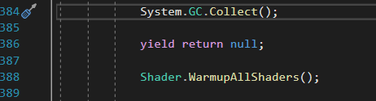
查找资料： 1 设置抗锯齿（MSAA）导致的，网上说的是要关闭，但是我关闭后，第一次就报错
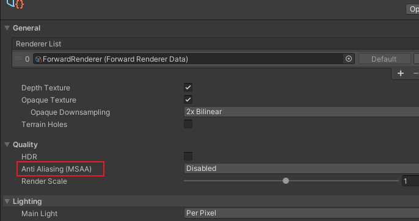
其他资料 https://docs.unity3d.com/Manual/shader-variant-collections.html
https://github.com/ValveSoftware/unity-xr-plugin/issues/88
https://forum.unity.com/threads/a-non-multisampled-texture-spams-the-console.1143884/
https://blog.csdn.net/u013716859/article/details/124644214
3.目前先注释调这个代码看看